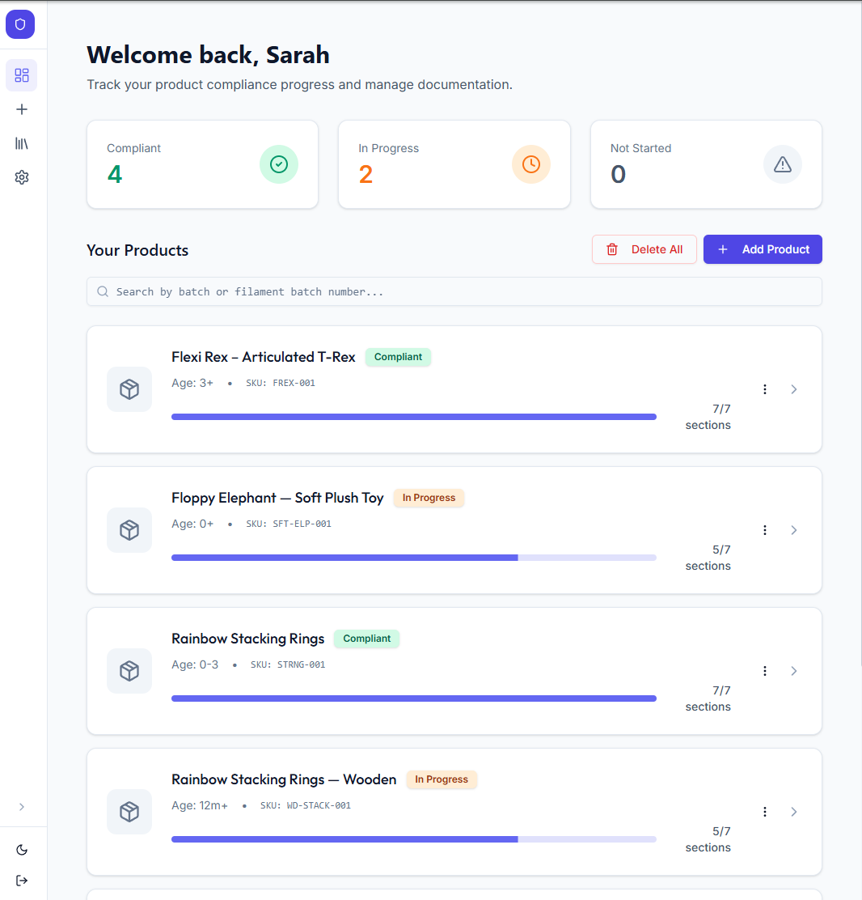
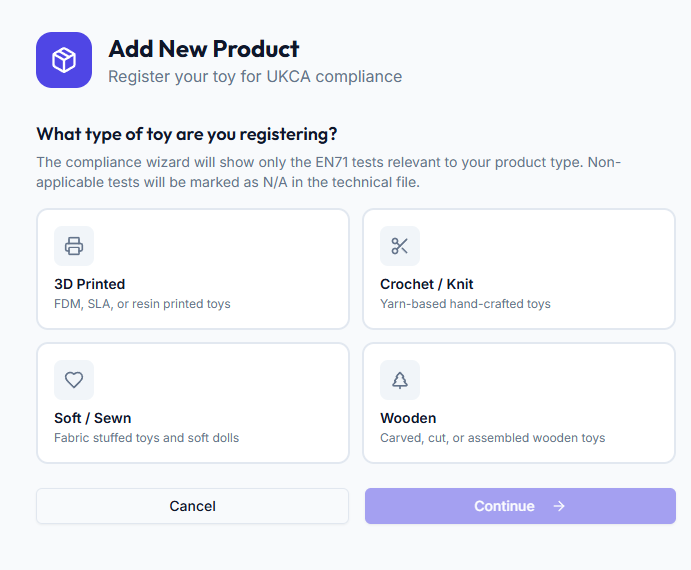
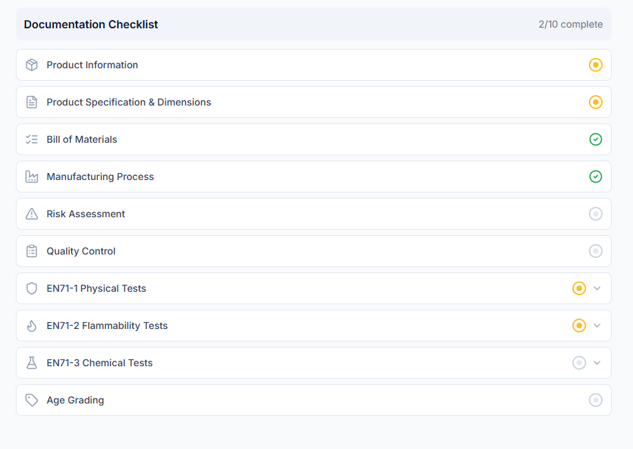
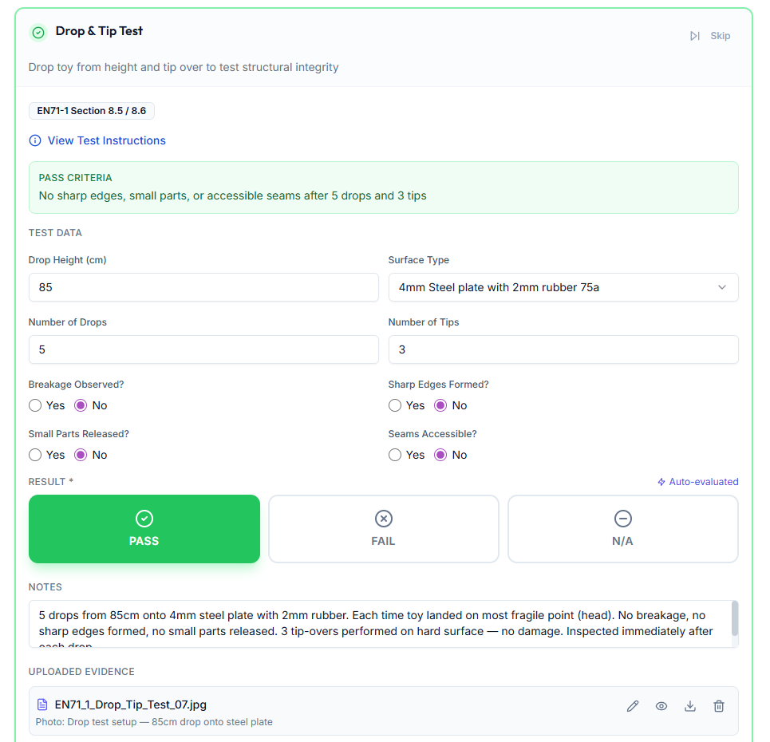
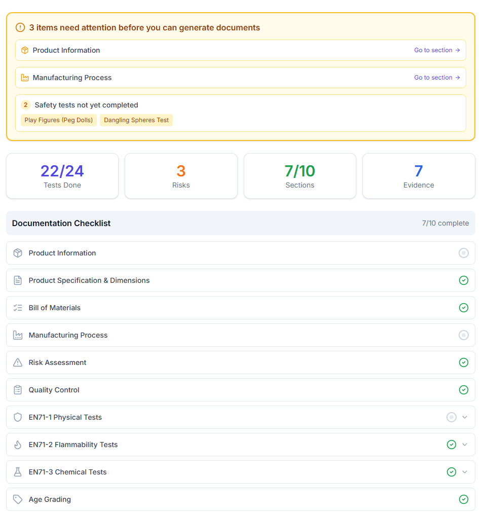
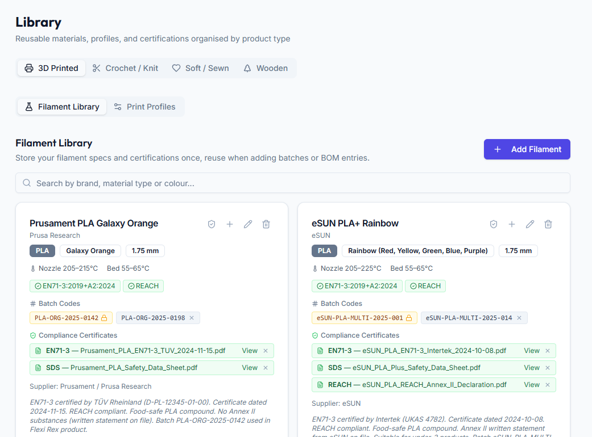
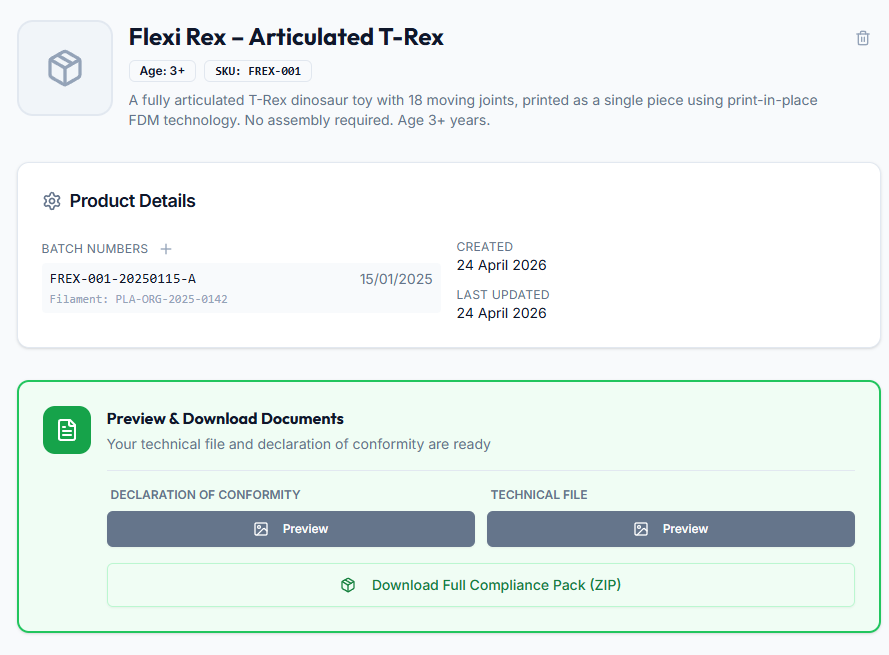

Whether you're selling at a craft fair or starting a small Etsy shop, Certified Workshop guides you through everything you need to legally sell toys in the UK — step by step, in plain English.

No jargon, no spreadsheets. Just a friendly checklist that takes you from blank page to ready-to-sell.

The wizard walks you through all eight sections required under TSR 2011 Schedule 5 — from product specification and bill of materials right through to safety testing and age grading. Everything auto-saves as you go.


For each EN71 test that applies to your toy, you can record a pass, fail, or note that it's not applicable — with a written justification. Upload photos, lab reports, or certificates against each individual test.
Each product has a documentation checklist that shows your completion status section by section. When everything is ticked off, your Declaration of Conformity and Technical File are ready to download straight away.


Build a library of all the filaments, yarns, fabrics, and wood you use. Store supplier details, batch codes, and EN71 test certificates against each material — then link them to the products you make from them.
Once your technical file is complete, generate your Declaration of Conformity and full Technical File as properly formatted PDFs. They include all the information required under TSR 2011 Schedule 5, with your company name and product details filled in automatically.

Create an account to get started, add your first product, and work through the checklist at your own pace.
Create a free account